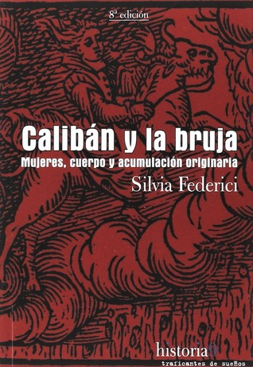

Calibán y la bruja: Mujeres, cuerpo y acumulación originaria
Reseña por Jorge I. Zuluaga

Ver detalles · Ver reseña en GoodReads (necesita cuenta)
"Calibán y la bruja" es la historia de los procesos de acumulación originaria y del papel que jugaron, por un lado, las mujeres —o principalmente las mujeres, la "bruja" en el título del libro— y, por el otro y también en grado no menor, los esclavos, los medios esclavos, los pueblos originarios colonizados por las clases dominantes europeas, el súbdito colonial, el "Calibán" del título; todo ello durante el nacimiento del capitalismo en el período comprendido entre los años 1400 y 1600.
La acumulación originaria es, como aprendí en el libro, el nombre que da el marxismo y, en general, la economía política a la etapa en la que comenzó la apropiación de la tierra y el trabajo (el capital) por parte de unos pocos, evento que significó también, según esta corriente intelectual, el nacimiento mismo del capitalismo.
Para los y las más sensibles, hay que advertir que este libro prácticamente viene con "rayo marxista" incluido... je, je.
En realidad, para mí, que no tengo una formación académica en estas disciplinas, fue muy satisfactorio e ilustrativo conocer, a través de este libro, algunos de los principios del marxismo. Mejor aún, fue conocerlos en un texto en el que están, además, problematizados y revisados desde la perspectiva femenina; y, más precisamente, leerlos con la orientación de una filósofa feminista, pero también de una filósofa marxista, aunque en un sentido moderno de la palabra. Muy al principio, Silvia Federici señala: "Marx nunca podría haber supuesto que el capitalismo allanaba el camino hacia la liberación humana si hubiera mirado su historia desde el punto de vista de la mujer". Ese es precisamente el espíritu del libro.
El libro está escrito en un código que cabalga entre el impenetrable lenguaje de la filosofía política —muy necesario para reconocer el rigor del análisis que hace su autora, la filósofa Silvia Federici, del lugar de la mujer en las transformaciones económicas de aquel tiempo— y un lenguaje más llano, más cercano a los que no somos expertos en el tema, pero que nos interesa conocer el origen de muchos fenómenos que hoy damos por "naturales" en las sociedades humanas.
Por la misma razón, "Calibán y la bruja" se disfruta tanto como un libro de historia, así como uno de filosofía política. Aunque tiene apartes oscuros (por eso no le doy 5 estrellas), la mayor parte de lo que se lee es perfectamente entendible para quien quiera entenderlo.
Leí el libro inicialmente motivado por el deseo de conocer más sobre la historia de la mal denominada cacería de brujas, fenómeno que se produjo en Europa y en América entre los años 1400 y 1700. Una persecución que deberíamos llamar mejor "holocausto femenino de la Edad Moderna" (decenas de miles de mujeres murieron en el lapso de casi dos siglos durante una persecución sistemática e institucionalizada). Sin embargo, al leer el libro me encontré con una historia mucho más compleja y menos centrada en esa persecución específica. "Calibán y la bruja" no es sobre la caza de brujas, es sobre un fenómeno más complejo y aún peor, que incluyó ese holocausto.
Para mí, que no soy un experto en estas materias, resultó fascinante asomarme a formas de gobierno y de producción en tiempos anteriores al capitalismo, pero también posteriores al feudalismo medieval. Tiempos en los que la propiedad estaba más distribuida y, en algunos casos, incluso era de dominio comunitario o de quien necesitara usufructuarla para la supervivencia; tiempos en los que las mujeres jugaban un papel más central en la comunidad y en actividades que posteriormente serían casi exclusivas de los hombres, entre ellas la medicina y el cuidado de las mujeres embarazadas; una época en la que personas, al menos en la Europa de finales de la Edad Media, se podían organizar para defenderse de los injustos procesos de privatización de la tierra y el trabajo (la acumulación originaria). Fue en esos tiempos que surgió precisamente el movimiento "herético" que ha llegado a nosotros distorsionado por el cristianismo y convertido en un fenómeno religioso, cuando en realidad se trató de la denominación que recibió de forma genérica una organización social, la organización que defendía a las comunidades contra la apropiación de las clases dominantes, incluyendo, naturalmente, al clero (de allí la conexión con un fenómeno religioso). Un o una hereje, en pocas palabras, era lo mismo en aquel entonces que lo que hoy llamaríamos un o una sindicalista, un o una activista social.
En todo ese fenómeno, las mujeres fueron las que llevaron la peor parte: "La caza de brujas jugó el papel principal en la construcción de su nueva función social y en la degradación de su identidad social". Además, "las ventajas que extrajo la clase capitalista de la diferenciación entre trabajo agrícola e industrial palidecen en comparación con las que extrajo de la degradación del trabajo y de la posición social de las mujeres".
Como sucede en cada lectura que hago de la historia de los feminismos, o mejor, de las luchas de las mujeres de diversas épocas contra las estructuras de poder que las han sometido y esclavizado, no deja de parecerme perturbador reconocer cómo los avances científicos y tecnológicos, incluso los denominados "avances" sociales asociados con el conocimiento, se hicieron o bien en complicidad con las más abominables prácticas contra las mujeres o contra los súbditos coloniales. Es así como descubre uno, para citar solo un ejemplo, que el "padre" de la ciencia moderna, Francis Bacon, concibió sus ideas sobre el método científico usando como modelo aquel que se aplicaba en los juzgados de la Inquisición para interrogar a los "herejes" y, por supuesto, a las mujeres (brujas). La naturaleza era, pues, un hereje más, una bruja más que debía ser interrogada.
Cita la Federici a Carolyn Merchant, quien sugiere que "hay que desafiar la suposición de que el racionalismo científico fue un vehículo de progreso"; al contrario, "la profunda alienación que la ciencia moderna ha instituido en los seres humanos y la naturaleza, entrelaza la caza de [mujeres] con la destrucción del medio ambiente y conecta la explotación capitalista del mundo natural con la explotación de las mujeres".
También perturba saber, o empezar a descubrir, que las bondades del capitalismo o la Ilustración fueron posibles gracias al trabajo esclavizado de los pueblos originarios de África y América y, por supuesto, de las mujeres de todos los lugares y los tiempos.
"En la nueva organización del trabajo todas las mujeres se convirtieron en bien común, pues una vez que las actividades de las mujeres fueron definidas como no-trabajo, el trabajo femenino se convirtió en un recurso natural, disponible para todos, no menos que el aire que respiramos o el agua que bebemos".
Naturalmente, el libro destina un capítulo entero a la caza de mujeres (brujas). Como es de esperarse, otra vez, los hallazgos que pone en evidencia Silvia Federici son perturbadores. Desde la revisión de lo que se ha escrito, porque "buena parte de la literatura sobre este tema ha sido escrita desde un punto de vista favorable a la ejecución de las mujeres", pasando por la identificación de la caza de mujeres como "un fenómeno contemporáneo a la colonización y el exterminio de las poblaciones del Nuevo Mundo"; hasta llegar a la conclusión de que "la caza de brujas fue, por lo tanto, una guerra contra las mujeres, un intento coordinado de degradarlas, demonizarlas y destruir su poder social".
"Calibán y la bruja" es, pues, un libro obligado para todos aquellos que buscamos una versión alternativa de la historia, una versión contada desde la relevante perspectiva del otro 50% de la humanidad, las mujeres, que por fin (lo digo por los últimos dos siglos) tienen la voz para revelarnos la parte olvidada, su parte, de esa misma historia.
¡Léanlo ya!